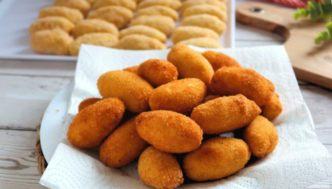

Croquetas

Croquetas are delicious Spanish bites made from a creamy mixture of ingredients, typically ham or chicken, rolled in breadcrumbs and fried to golden perfection.
Ingredients
- Ham or chicken (typically shredded or finely chopped)
- Milk or béchamel sauce
- Flour
- Bread crumbs
- Eggs
- Olive oil or vegetable oil for frying
- Seasonings (such as salt, pepper, nutmeg, and parsley)
Steps
- Cook and finely chop ham or chicken.
- Prepare a béchamel sauce by heating milk and flour together until thickened.
- Combine the cooked meat and béchamel sauce, mixing well.
- Let the mixture cool and refrigerate for at least 2 hours to firm up.
- Shape the mixture into small cylinders or balls.
- Coat each croqueta in beaten eggs and roll in breadcrumbs.
- Heat oil in a pan and fry the croquetas until golden brown.
- Drain on paper towels to remove excess oil.
- Serve hot and enjoy the delicious croquetas!